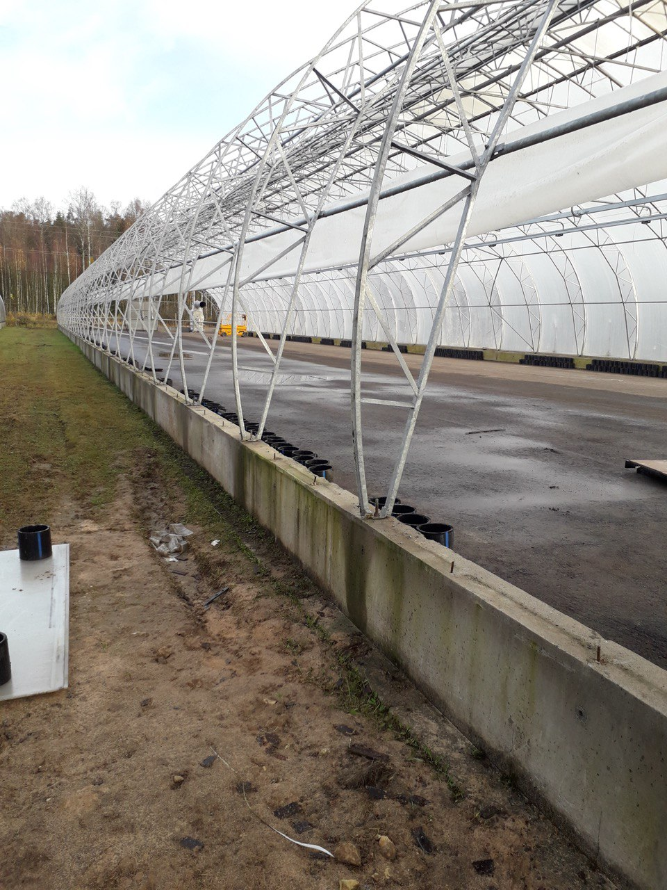
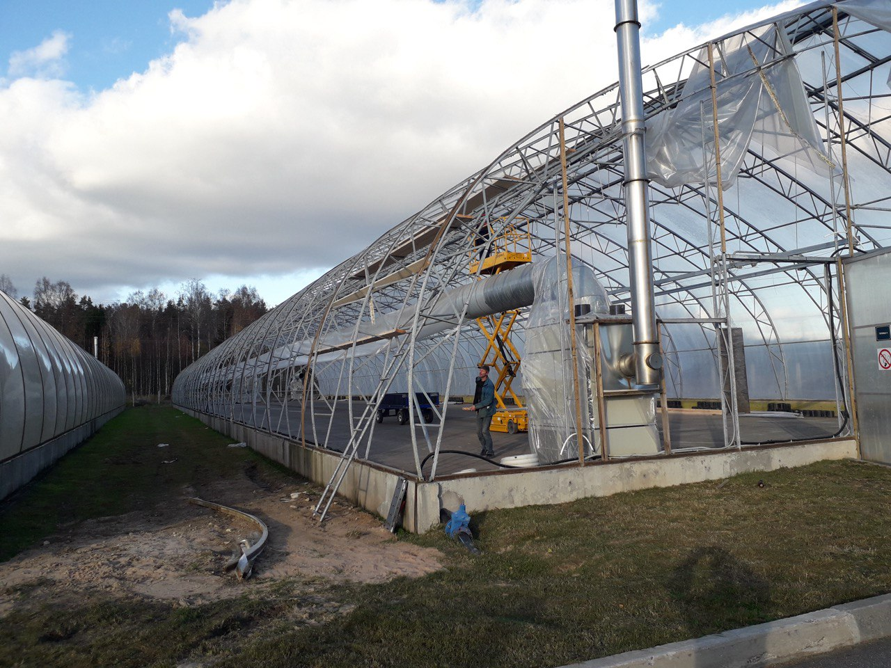
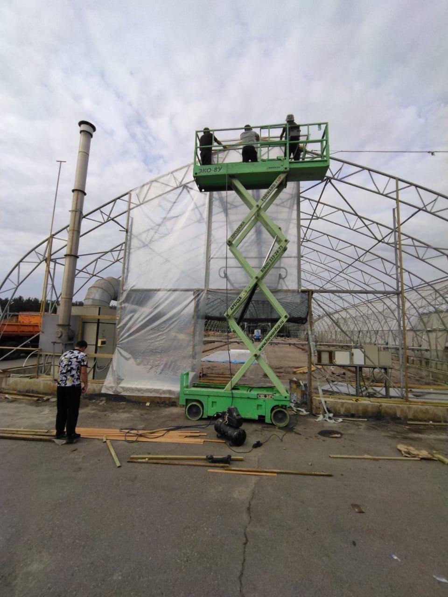
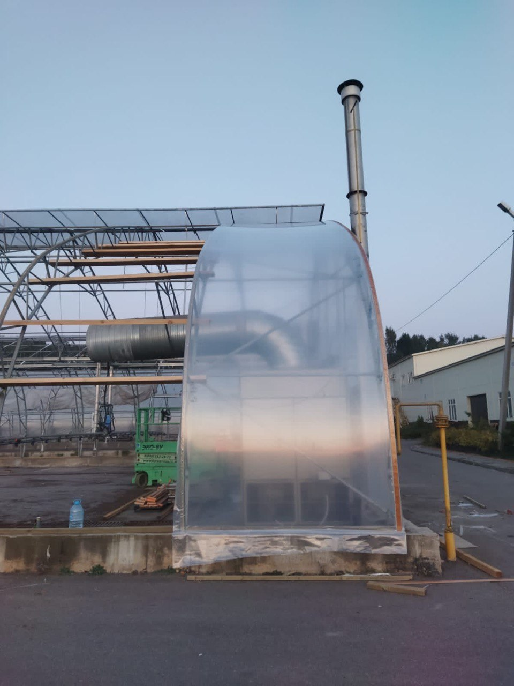

Ремонт теплиц
Профессиональный ремонт
Мы предоставляем услуги по ремонту теплиц, включая замену пленки, фрамуг, двигателей и других компонентов. Наш опыт позволяет выполнить работы качественно и в кратчайшие сроки.
Поставка ремкомплекта
Мы можем предоставить полный ремкомплект, включающий профессиональную сополимерную пленку EVA PATILUX D\AG, материалы для ремонта фрамуг, крепежный брусок, метизы и другие необходимые компоненты.
Фотографии наших работ




Свяжитесь с нами
Получите подробную консультацию от наших специалистов. Мы всегда готовы помочь вам с ремонтом теплиц!
Позвонить нам